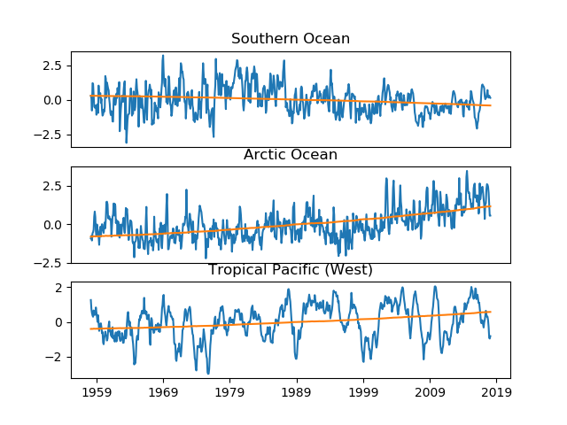
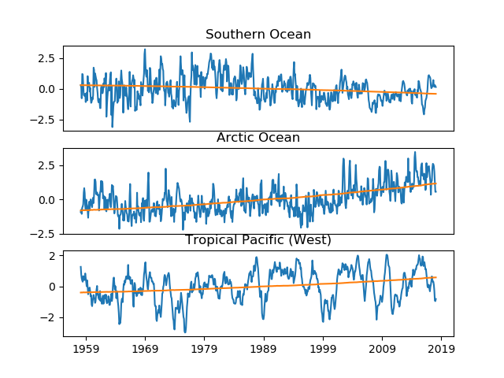
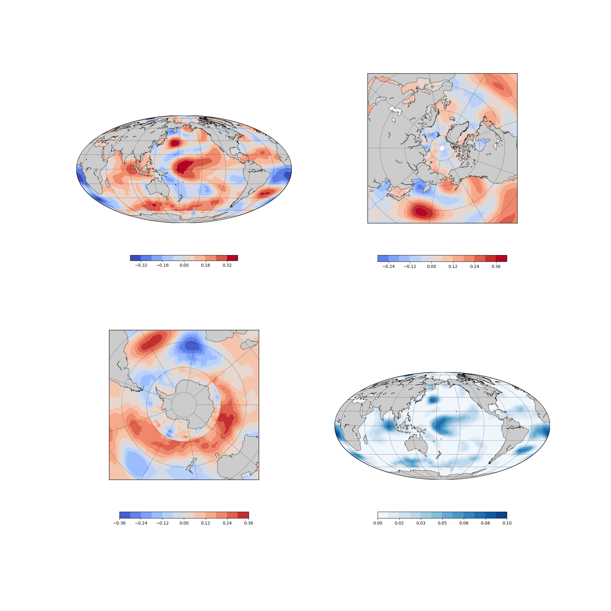

Код программы
#-------------------------------------------------------------------------------
# Name: module1
# Purpose:
#
# Author: Zhuravlev Kirill
#
# Created: 07.03.2018
# Copyright: (c) dmitr&ZhK 2018
# Licence:
#-------------------------------------------------------------------------------
import numpy as np
import matplotlib
import matplotlib.pyplot as plt
#import datetime as dt
#from mpl_toolkits.basemap import Basemap, addcyclic, shiftgrid
import ncdump as nc
from netCDF4 import Dataset
import math
import numpy.ma as ma
from sklearn import preprocessing as prep
import datetime as dt
from dateutil import relativedelta as rel
#from sklearn import manifold
def setmap(pr,bl):
m = Basemap(projection=pr, llcrnrlat=-90, urcrnrlat=90,\
llcrnrlon=0, urcrnrlon=360,\
resolution='c', lon_0=-180.,boundinglat=bl)
m.drawcoastlines(linewidth=0.5)
m.drawmapboundary()
parallels = np.arange(-80,100,20.)
#[left,right,top,bottom]
## if pr=='moll':
## plabels=[True,False,False,True]
## mlabels=[False,False,False,False]
## else:
## plabels=[False,False,False,False]
## mlabels=[True,True,True,True]
plabels=[False]*4
mlabels=plabels
m.drawparallels(parallels,labels=plabels,linewidth=0.5)
meridians = np.arange(10.,351.,40.)
m.drawmeridians(meridians,labels=mlabels,linewidth=0.5)
return m
def total_mean(ssta,lats):
ssta=np.array(ssta)
ntot=np.shape(ssta[:,ssta[0,:,:]!=0.])
print(ntot)
nlat,nlon=np.shape(ssta)[1:3]
for i in range(np.shape(ssta)[1]):
ssta[:,i,:]=ssta[:,i,:]*math.cos(lats[i]*math.pi/180.)
return np.sum(ssta,axis=(1,2))/float(ntot[1])
def contribution(ssta,residuals,lats):
resid_var=0.
total_var=0.
for i in range(np.shape(ssta)[1]):
resid_var=resid_var+\
np.sum((residuals[:,i,:]**2)*math.cos(lats[i]*math.pi/180.))
total_var=total_var+\
np.sum((ssta[:,i,:]**2)*math.cos(lats[i]*math.pi/180.))
return 1.-resid_var/total_var
def space_contribution(ssta,residuals):
return 1.-np.sum(residuals**2,axis=0)/np.sum(ssta**2,axis=0)
def alphas(data,co2,mask):
alpha=np.dot(data.T,co2)
var=np.sum(co2**2)
alpha=alpha/var
#al=ssta[0,:]
al=np.array([[0.]*nlon]*nlat)
al[mask]=alpha
al[~mask]=0.
return al
def regression(data,signal,mask,time,lats,season=None,R=False):
if season:
Is=[i for i in range(np.shape(time)[0]) if (time[i].month in season)]
else:
Is=range(np.shape(time)[0])
dat=np.take(data,Is,axis=0)
sig=np.take(signal,Is)
alph=alphas(dat[:,mask],sig,mask)
regr=np.tensordot(sig,alph,axes=0)
residuals=dat-regr
cont=contribution(dat,residuals,lats)
if (R):
return alph, cont, residuals, space_contribution(dat,residuals)
else: return alph, cont
nc_fid = Dataset('ssta-ver4.nc', 'r')
#nc_li = Dataset('LImask.nc', 'r')
nc_attrs, nc_dims, nc_vars = nc.ncdump(nc_fid)
#mask_vars= nc.ncdump(nc_li)[2]
lats = nc_fid.variables['Y'][:]
lons = nc_fid.variables['X'][:]
time = nc_fid.variables['T'][:]
sst = nc_fid.variables['anom'][:]
#mask = nc_li.variables['mask'][:]
'''
sst=np.array(sst)
ssta=sst[:,0,:]
nt,nlat,nlon = np.shape(ssta)
mask = ~ma.masked_values (ssta[0,:], -999).mask
'''
co2=np.loadtxt('co2.txt')[:,5]
n_co2=np.shape(co2)[0]
co2=co2-np.sum(co2)/float(n_co2)
#ssta[:,mask]=\
#prep.scale(ssta[:,mask], with_mean='True', with_std='False')
#ssta[:,~mask]=0.
#ssta[:,0:9,:]=0.
#ssta[:,81:89,:]=0.
init_date=dt.date(1960,1,1)
time=time-0.5
sst_time=np.array([init_date+rel.relativedelta(months=+int(t)) for t in time])
init_co2=dt.date(1958,3,1)
co2_time=np.array([init_co2+rel.relativedelta(months=+i) for i in range(n_co2)])
shift=np.abs(co2_time[0]-sst_time).argmin()
sst=np.array(sst)
ssta=sst[shift:,0,:]
nt,nlat,nlon = np.shape(ssta)
mask = ~ma.masked_values (ssta[0,:], -999).mask
ssta[:,mask]=\
prep.scale(ssta[:,mask], with_mean='True', with_std='False')
ssta[:,~mask]=0.
al_co2, co2_cont, residuals,sp_cont_co2 = regression(ssta,co2,mask,co2_time,lats,R=True)
mean_ssta=total_mean(ssta,lats)
mean_co2=mean_ssta-total_mean(residuals,lats)
fig=plt.figure()
plt.plot(co2_time,mean_ssta)
plt.plot(co2_time,mean_co2)
plt.show()
plt.close(fig)
sun=np.loadtxt('sunspots.txt')
ns=np.shape(sun)[0]
sun_dates=np.array([dt.date(int(sun[i,0]),int(sun[i,1]),1) for i in range(ns)])
shift_sun=np.abs(co2_time[0]-sun_dates).argmin()
sunspots=sun[shift_sun:,3]
sunspots=sunspots-np.sum(sunspots)/float(np.shape(sunspots)[0])
from scipy.signal import gaussian
from scipy.ndimage import filters
b = gaussian(200,5)
sunspots_smooth = filters.convolve1d(sunspots, b/b.sum())
surr=np.array([math.cos(2.*i*math.pi/(11.*12.)) for i in range(n_co2)])
summer=[5,6,7,8]
winter=[11,12,1,2]
al_sun, sun_contr,sun_residuals,sp_cont_sun=regression(residuals,sunspots_smooth,mask,co2_time,lats,R=True)
al_periodic, sun_contr_periodic,sun_residuals_periodic,sp_cont_periodic=regression(residuals,surr,mask,co2_time,lats,R=True)
al_sun_winter,sun_contr_winter,sun_residuals_winter,sp_cont_winter=regression(residuals,sunspots_smooth,mask,co2_time,lats,season=winter,R=True)
al_sun_summer,sun_contr_summer,sun_residuals_summer,sp_cont_summer=regression(residuals,sunspots_smooth,mask,co2_time,lats,season=summer,R=True)
print('CO2 contribution:', co2_cont)
print('Sun contribution:', sun_contr,'\n\t\twinter:',sun_contr_winter,'\n\t\tsummer:',sun_contr_summer,'\n\t\tperiodic:',sun_contr_periodic)
#plt.plot(sun_dates[shift_sun:],sunspots)
#plt.plot(sun_dates[shift_sun:],sunspots_smooth)
#plt.plot(sun_dates[shift_sun:],100.*surr)
#plt.savefig('sunspots.png')
#plt.plot(sun_dates[shift_sun:],sun[shift_sun:,4])
#plt.show()
SO=[-60.,180.] # A point in the Southern Ocean
Arctic=[70.,1.] # ... in the Arctic Ocean
TP=[0,180] # ... in the tropical Pacific
##
##
##
SO_ind=[abs(lats-SO[0]).argmin(),abs(lons-SO[1]).argmin()]
Arctic_ind=[abs(lats-Arctic[0]).argmin(),abs(lons-Arctic[1]).argmin()]
TP_ind=[abs(lats-TP[0]).argmin(),abs(lons-TP[1]).argmin()]
##
fig=plt.figure()
##
ax=plt.subplot(3,1,1)
plt.plot(sst_time[shift:],ssta[:,SO_ind[0],SO_ind[1]])
ax.tick_params(labelbottom='off',bottom=False)
plt.title('Southern Ocean')
plt.plot(co2_time,al_co2[SO_ind[0],SO_ind[1]]*co2)
ax=plt.subplot(3,1,2)
ax.tick_params(labelbottom='off',bottom=False)
plt.title('Arctic Ocean')
plt.plot(sst_time[shift:],ssta[:,Arctic_ind[0],Arctic_ind[1]])
plt.plot(co2_time,al_co2[Arctic_ind[0],Arctic_ind[1]]*co2)
plt.subplot(3,1,3)
plt.title('Tropical Pacific (West)')
plt.plot(sst_time[shift:],ssta[:,TP_ind[0],TP_ind[1]])
plt.plot(co2_time,al_co2[TP_ind[0],TP_ind[1]]*co2)
plt.show()
###plt.savefig('timeseries.png')
##
plt.close(fig)
from mpl_toolkits.basemap import Basemap, addcyclic, shiftgrid
from matplotlib import ticker
fig = plt.figure(figsize=(20,20))
##
al_cyclic, lons_cyclic = addcyclic(al_sun_summer, lons)
al_cyclic, lons_cyclic = shiftgrid(0., al_cyclic, lons_cyclic, start=False)
lon2d, lat2d = np.meshgrid(lons_cyclic, lats)
#vmin=-0.36
vmin=-0.006
vmax=-vmin
plt.subplot(2,2,1)
m=setmap('moll',None)
m.fillcontinents()
x, y = m(lon2d, lat2d)
cs = m.contourf(x, y, al_cyclic, 11, cmap=plt.cm.coolwarm, vmin=vmin,vmax=vmax)
cb=plt.colorbar(cs, orientation='horizontal', shrink=0.5)
plt.subplot(2,2,2)
m=setmap('npaeqd',30)
m.fillcontinents()
x, y = m(lon2d, lat2d)
cs = m.contourf(x, y, al_cyclic, 11, cmap=plt.cm.coolwarm, vmin=vmin,vmax=vmax)
cb=plt.colorbar(cs, orientation='horizontal', shrink=0.6)
plt.subplot(2,2,3)
m=setmap('spaeqd',-30)
m.fillcontinents()
x, y = m(lon2d, lat2d)
cs = m.contourf(x, y, al_cyclic, 11, cmap=plt.cm.coolwarm, vmin=vmin,vmax=vmax)
cb=plt.colorbar(cs, orientation='horizontal', shrink=0.6)
plt.subplot(2,2,4)
al_cyclic, lons_cyclic = addcyclic(sp_cont_summer, lons)
al_cyclic, lons_cyclic = shiftgrid(0., al_cyclic, lons_cyclic, start=False)
m=setmap('moll',None)
m.fillcontinents()
x, y = m(lon2d, lat2d)
cs = m.contourf(x, y, al_cyclic, 11, cmap=plt.get_cmap('Blues'),vmin=0,vmax=0.14)
cb=plt.colorbar(cs, orientation='horizontal', shrink=0.6,\
format=ticker.FormatStrFormatter('%.2f'), ticks=np.arange(0,0.14,0.04))
#plt.show()
plt.savefig('sun_summer.png')
plt.close(fig)